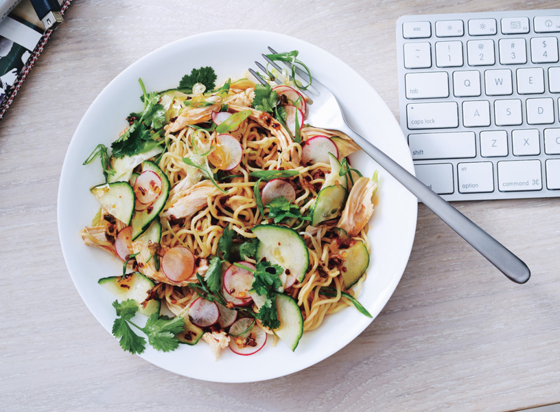
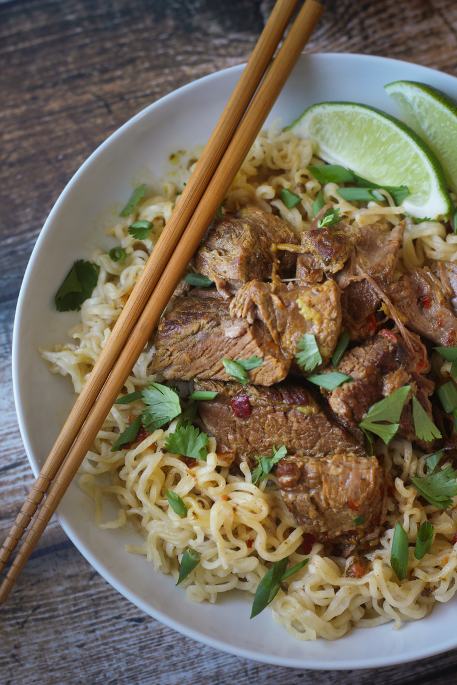
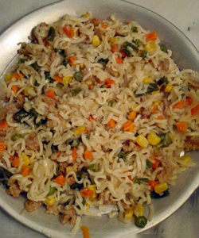

볶음라면 레시피
홍길동
Seoul,Korea
내정보변경
설정
빨간국물
하얀국물
짜장라면
비빔라면
볶음라면
냉라면
PB제품
퓨전라면
자신만의 독특한 레시피를 올리고
SNS로 공유해 보세요

오이고수볶음면
By
초코우유
동남아 요리에 주로 쓰이는 고수를 이용해서 이...
15

소고기간장볶음면
By
맛라
깔끔한 맛을 위한 간장베이스에 단백질보충을...
37
소고기볶음라면
By
오나라
라면의 부족한 영양을 채워주고 싶어서 선택한...
198

볶음밥면
By
면식365
냉장고에 남아있는 자투리 채소를 활용하여 레...
102


 1537198102
1537198102